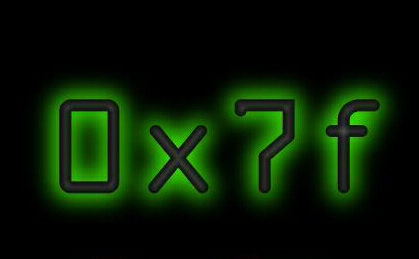

 j00z have been 0wned by LonE|WolF shouts: 0x7f, #rootcore, #datahack, Ontogenesis 4 scannin, my bro Arie|z and arc and LuCiFaR the crew: udpdump initd_ ka0x LonE|Wolf (me) Ontogenesis mainfrayme dNr
duhhhh netbios sux ass